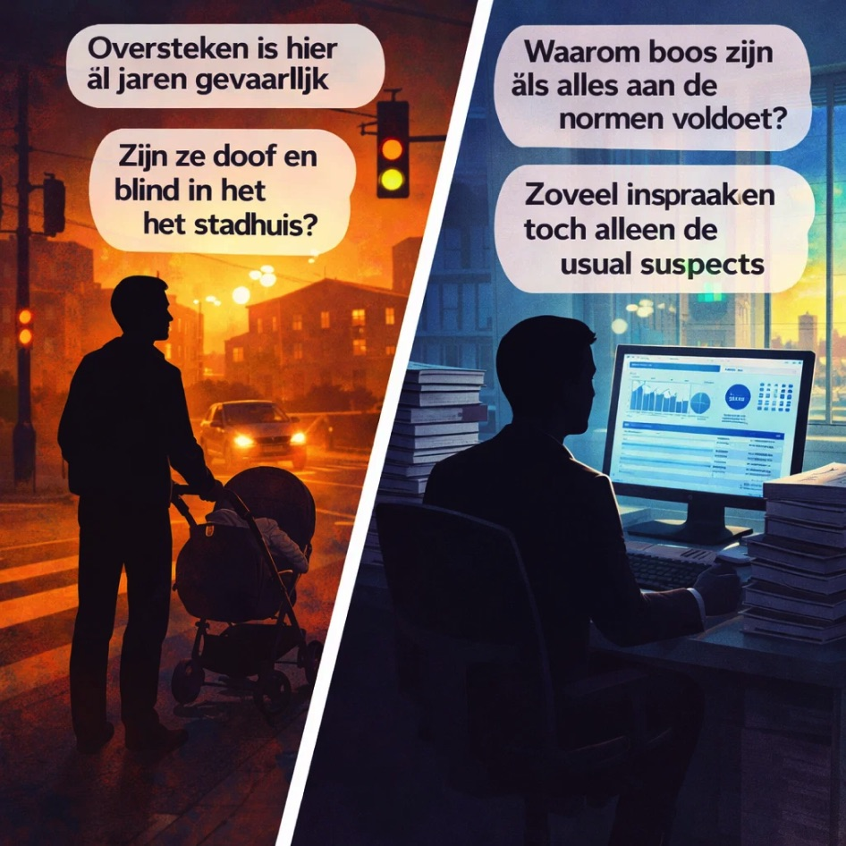
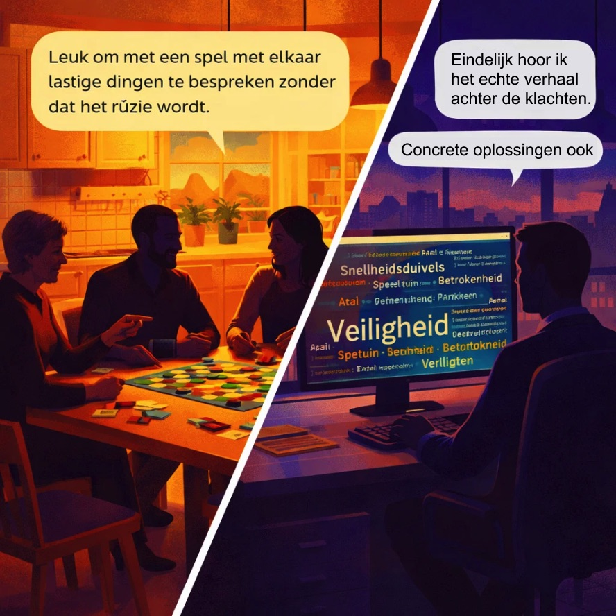
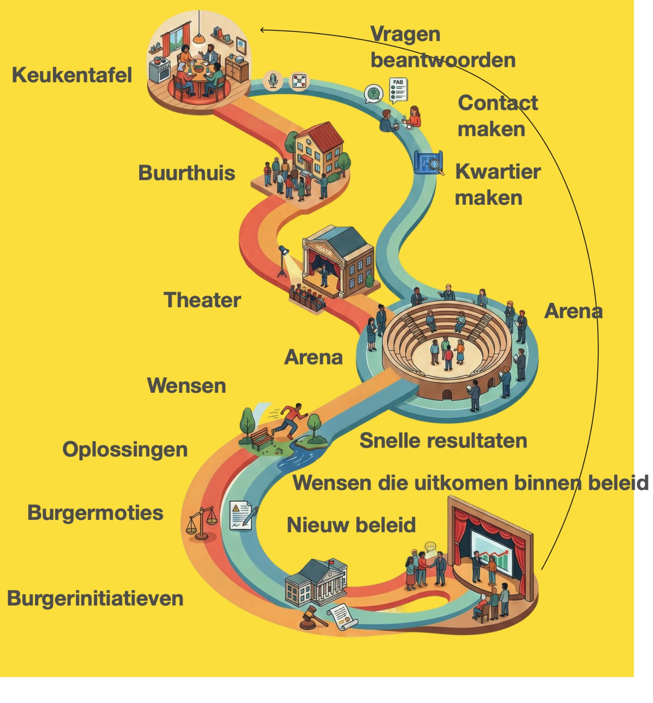
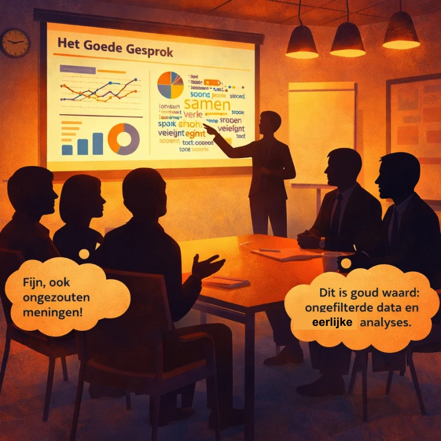
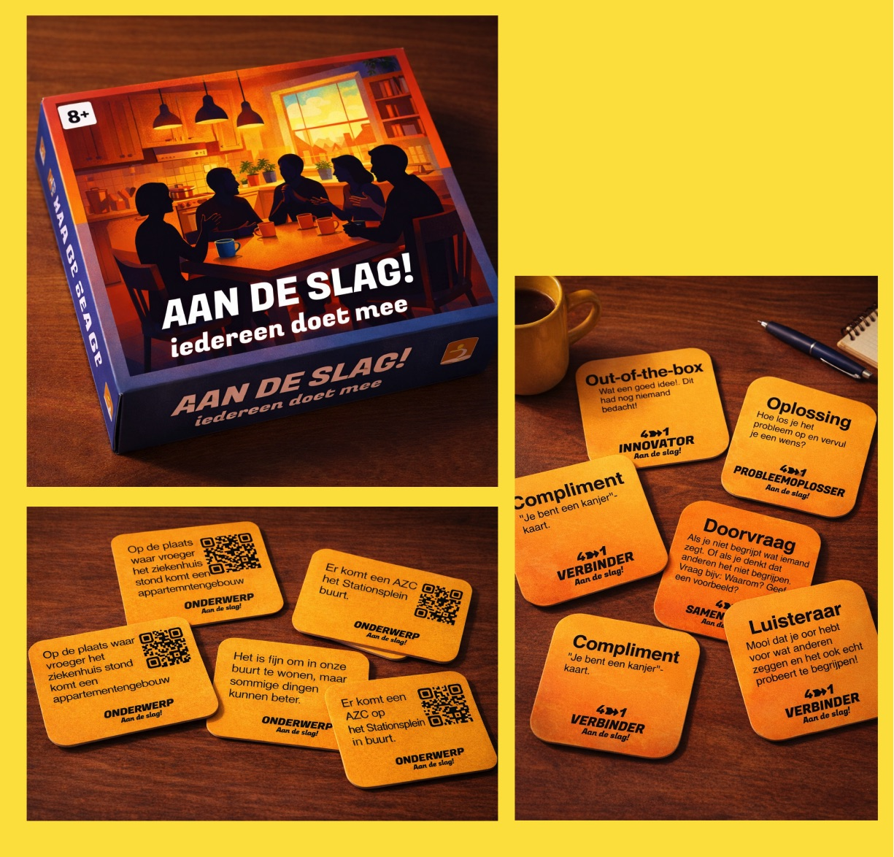
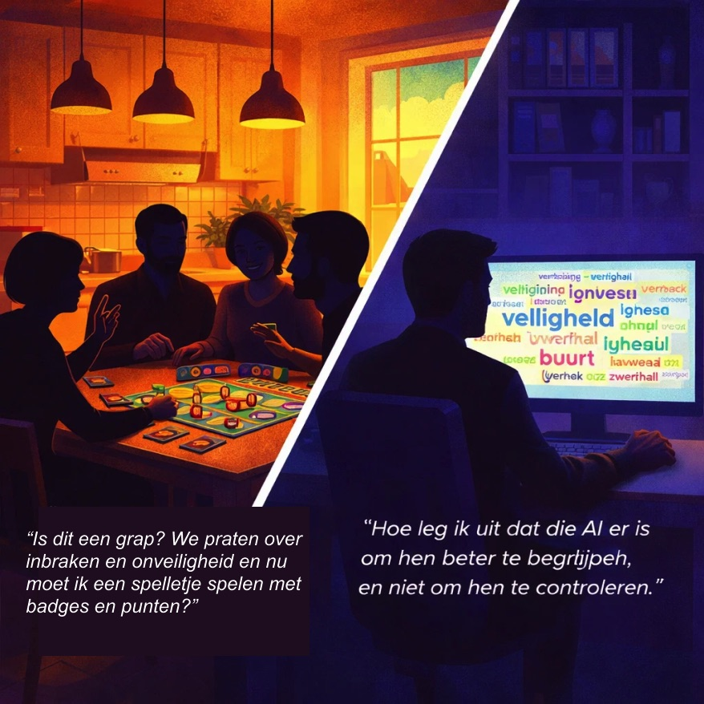
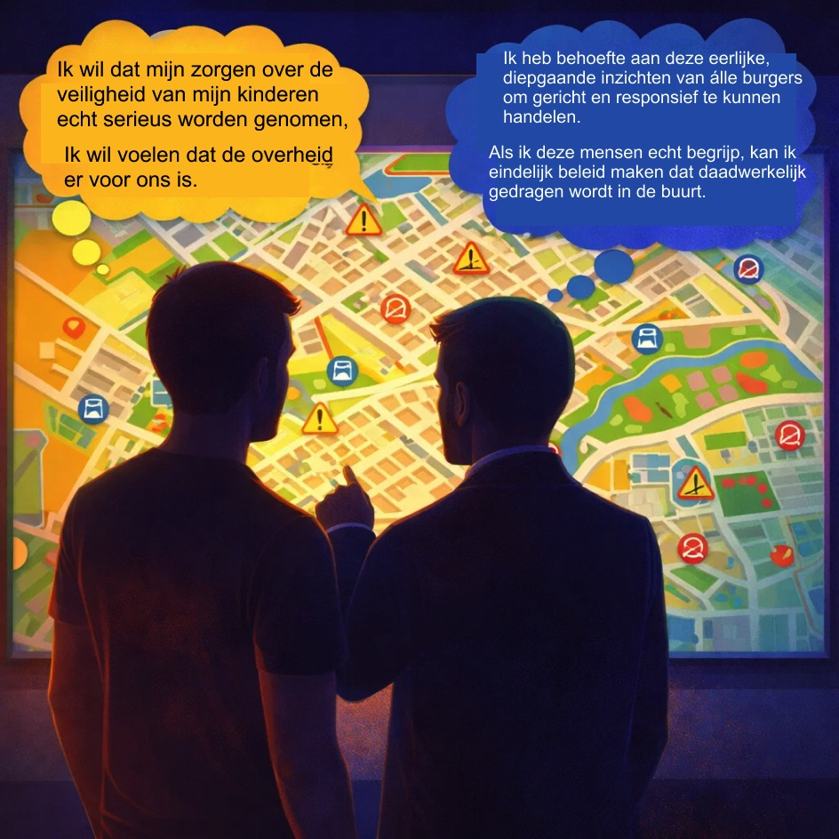

De Kloof Moet Dicht

- Burgers voelen zich niet gehoord door de overheid en haken af
- Spanningen tussen gezinnen, buurten en verenigingen nemen toe
- Diepe kloof tussen de systeemwereld van de overheid en de leefwereld van bewoners
- Dubbele betrokkenheid van inwoners en overheid moet fundamenteel worden hersteld
Het Goede Gesprek

- Unieke dialoogcyclus: van laagdrempelig en informeel tot formeel en uitgebreid
- Overbrugt de kloof: informele wensen van burgers via een transparant proces
- Koppelt bewoners direct aan een responsieve overheid die luistert en levert
- Doel: tastbare, gedragen verbeteringen in de leefomgeving — en een sterkere democratie
De Dialoogcyclus

Het Spel voor de Keukentafel

- Bordspel "Aan de Slag! Iedereen doet mee" — wensen ophalen aan de keukentafel
- 9 stappen: debat → dossier → gezamenlijke oplossing → stemming
- Individuele winnaar: meeste punten — maar de groep wint alleen samen
- Succes = gedragen oplossing én versterkte democratie
De Spreekbuis

- Alle gesprekken worden veilig en anoniem vastgelegd
- Waardevolle inzichten bewaard — trends en actiepunten zichtbaar
- Deelnemers blijven volledig anoniem en niet herkenbaar
- Tech en AI maken rapportage en overzicht over het gehele proces mogelijk
Gespreksstof

- Wandelende dialogen, lange tafels op pleinen en in parken
- Oma's Keukentafel 2.0, taalcafés, interviewsessies tussen jong en oud
- Lego, escape rooms, voetbal, muziek en vele andere vormen
- Altijd: stimulansen voor een respectvol gesprek met inhoud
Stichting Een Goed Gesprek
- Onafhankelijke stichting voor een eerlijk en geloofwaardig proces
- Experts op het gebied van dialogen en overheidsorganiseren
- Alle meningen ongefilterd horen — data-analyse zonder politieke sturing
- Neutrale en veilige omgeving voor structureel vertrouwensherstel
Obstakels

- Gamification kan als niet-serieus worden ervaren door bewoners met zware zorgen
- AI-monitoring kan angst voor een controlerende overheid aanwakkeren
- Balans tussen spel en ernst is een absolute randvoorwaarde voor geloofwaardigheid
- Privacy en technologie vragen zorgvuldige en transparante communicatie
Samenwerking

- Inwoners willen zich echt gehoord voelen over hun leefomgeving
- Overheid heeft behoefte aan diepe inzichten van álle burgers
- Methode brengt leefwereld van burger en systeemwereld van overheid samen
- Resultaat: tastbare samenwerking met echte impact — Het Goede Gesprek
Win-Win
- Bewoners ervaren dat hun stem echt telt — tastbare verbeteringen in de buurt
- Directe invloed op beleid — geen lege inspraak maar echte impact
- Overheid: haarscherpe, data-gedreven inzichten om effectiever en responsiever te handelen
- Democratisch fundament hersteld — niemand voelt zich meer buitengesloten